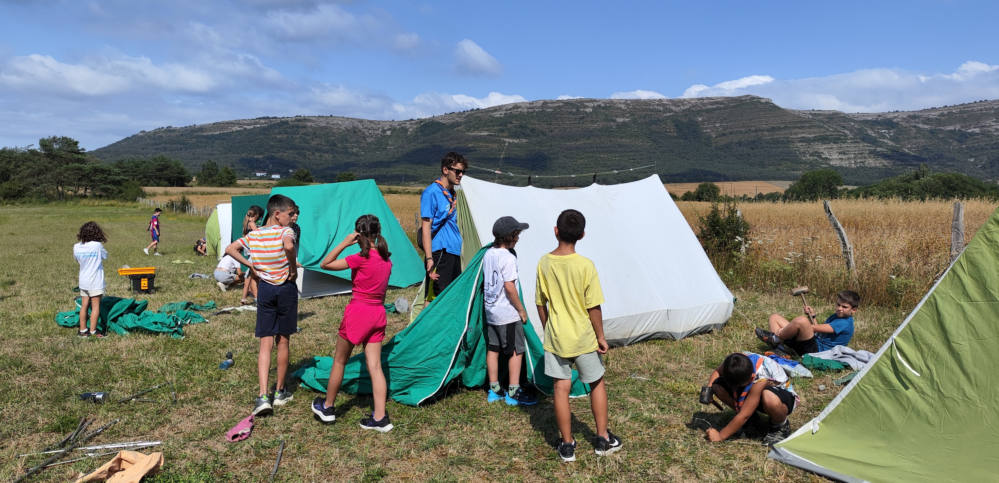
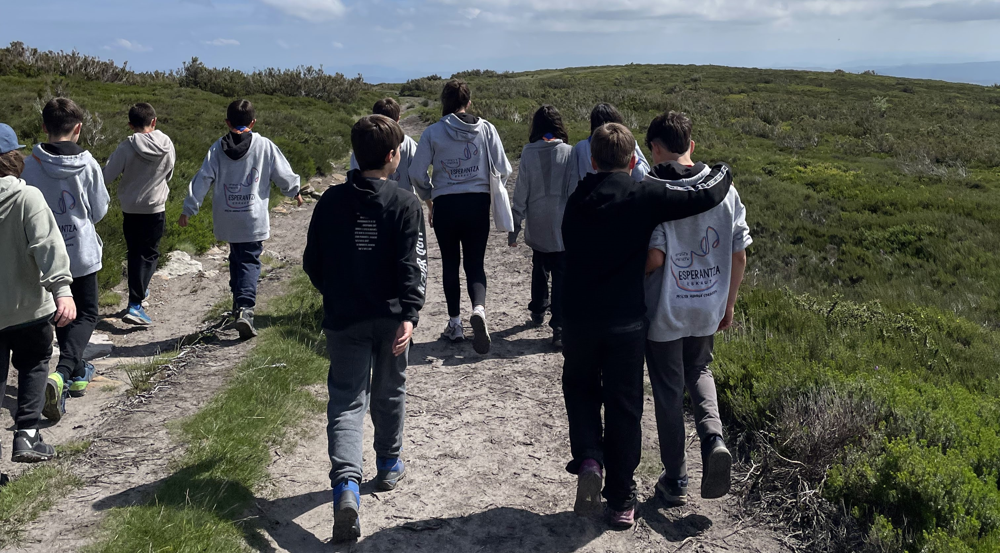
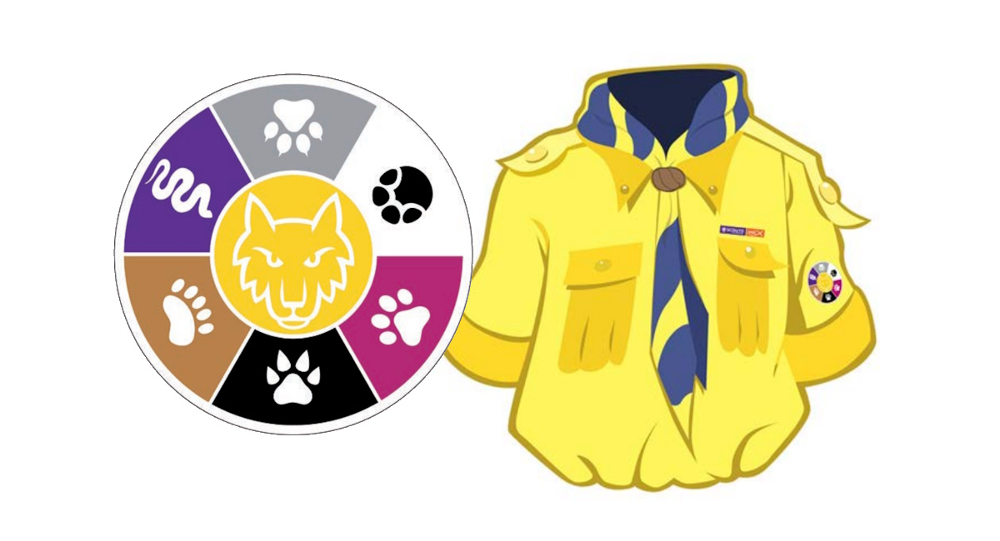

Una etapa de descubrimiento, crecimiento y primeras grandes amistades para niños y niñas de 8 a 12 años.

La rama de Lobatos (Koskorrak en euskera) es un espacio donde todo se vive a través del juego, la imaginación y la aventura. Los niños y niñas crecen en un entorno seguro donde pueden ser ellos mismos y aprender haciendo.

Inspirada en El Libro de la Selva, la Manada es un lugar donde cada niño y niña es protagonista de su desarrollo. Acompañados por los “Viejos Lobos”, avanzan hacia la autonomía aprendiendo a convivir, compartir y cooperar.

La Caza es la gran actividad de cada año. Creada por los propios lobatos; ellos proponen ideas, preparan y realizan la Caza, descubriendo que sus opiniones cuentan.

A través de la metodología de Lobatos, los chavales aprenden mediante juegos, salidas, celebraciones y campamentos, siempre en contacto con la naturaleza y con un enfoque educativo basado en aprender haciendo.

La vida en la Manada se organiza en pequeños grupos llamados seisenas, donde se fomenta la amistad, el trabajo en equipo y la responsabilidad compartida. Cada niño y niña tiene su lugar y aprende a convivir respetando a los demás.

Las máximas de los Lobatos son el método de utilizado para seguir en progreso indivisual de cada chaval. Se les anima a crecer con alegría, respeto, sinceridad y generosidad, plasmados en la Ley del Lobato.

Cuando están preparados, pueden dar un paso más y realizar la promesa de Lobatos, una decisión personal donde expresan su deseo de comprometerse a ayudar a los demás y formar parte activa de la Manada.